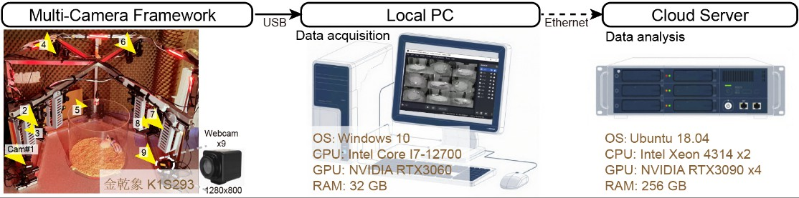

Equipment Assembly and List
Includes camera experimental box, experimental computer, and analysis server. Video tutorial: xxx

Camera Experimental Box
The table below lists all cameras and materials used in the camera experimental box.
| Name | Parameters | Quantity | Purchase Link |
|---|---|---|---|
| K1S293 Camera | 1280x800 resolution, 120fps, black and white | 9 | Taobao Purchase Link |
| Aluminum Profile Bracket | Hexagonal, double-layer bracket | 1 | Self-processing - |
| PTZ and Slider | 9 units | 9 | Taobao Purchase Link |
| Red Light Illumination LED | Ambient light illumination | 6 | Taobao Purchase Link |
| Aluminum Oxide Calibration Board | Chessboard, camera calibration; Model GP290 12x9 | 1 | Taobao Purchase Link |
| Metal Ball | For camera extrinsic calibration, diameter <2 cm | 1 | Any source |
| Acrylic Light Shield | Used to block background clutter and prevent image interference. Size according to experimental requirements. | 7 | Taobao Purchase Link |
Tips
- The appropriate focal length of the camera lens needs to be tested by yourself. Factors such as camera distance and experimental arena size will affect the choice of focal length.
- It is recommended to let the camera manufacturer provide different software identifiers (different names) for each camera.
- Sliders are not that necessary, as the field of view can be adjusted by focal length. However, the camera gimbal head is necessary to adjust the camera angle.
- Red light illumination LEDs are placed at the 6 corners of around the arena for even illumination. Otherwise, a single light source can easily cause image shadows, leading to reduced accuracy in subsequent image analysis. The light intensity is controled to achieve a final illumination of about 20 lux.
Error
Do not connect cameras directly to the computer's USB port, as the motherboard's USB bandwidth is severely limited and cannot connect multiple cameras simultaneously. Please use a professional-grade PCIE-USB expansion card (U3412U)!!
Experimental Computer Hardware Configuration
Used for collecting multi-camera video data and recording videos using OBS Studio.
| Name | Model | Notes |
|---|---|---|
| Operating System | Windows 10 | - |
| CPU | Intel Core i7-12700 | - |
| GPU | NVIDIA RTX 3060 | OBS Studio calls its HEVC video encoder |
| Memory | 32GB DDR4 3200MHz | - |
| Storage | SSD 1TB; HDD 8TB | - |
| PCIE-USB Expansion Card | Shenzhen Susuyou Technology U3412U, 6-port USB | Highly recommended, quantity x2 |
Cloud Computing Platform Hardware Configuration
Used for training models, inference models; data analysis, visualization; cloud computing platform for closed-loop behavioral intervention.
| Name | Model | Notes |
|---|---|---|
| Manufacturer | Inspur | - |
| Operating System | Ubuntu 18.04 | - |
| CPU | Intel Xeon 4314 dual | Dual CPU |
| GPU | NVIDIA RTX 3090 | Quantity x4 |
| Memory | 256GB DDR4 3200MHz | - |
| Storage | SSD 1TB; HDD 8TB | - |
(Optional) Cloud Storage Hardware (NAS) Configuration
Used for storing large amounts of experimental video data and analysis results, and supporting simultaneous access by multiple users.
| Name | Model | Notes |
|---|---|---|
| Synology 1 | DS2419+, 96 TB | - |
| Synology 2 | RS2821RP+, 200 TB | - |